11 decks
Every hand
takes you places.
A deck is not a skin in Cardz — each one brings its own table, its own suit colours, and its own painted courts and jokers. Switch at any time, mid-game.
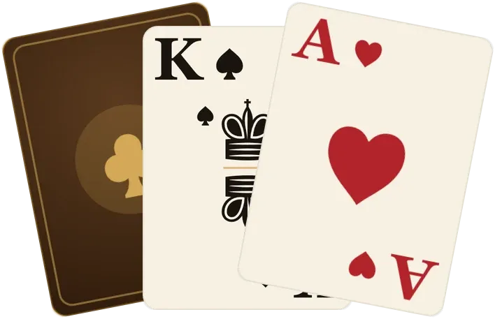
Felt House
The house deck, and the one Cardz deals with until you choose otherwise. Its courts, aces and jokers are printed chromolithographs — twelve named figures from the French pack, each one two-headed — while the number cards keep their drawn serif pips, and a brass filigree back carries a club at the heart of its rosette. Four inks and no others, so both halves read as a single printing.
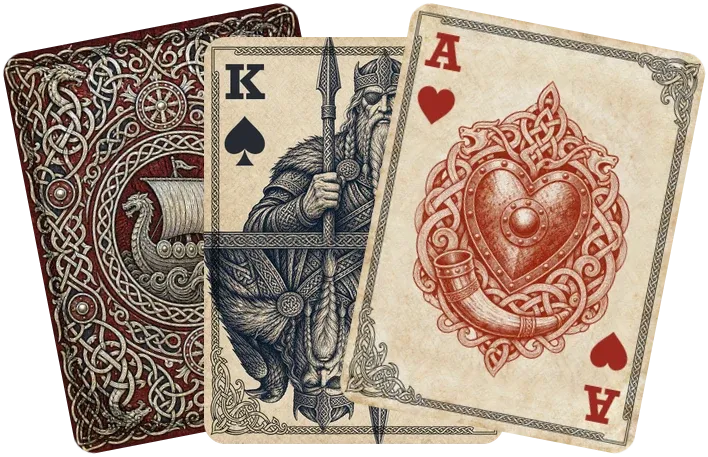
Valhalla
A Norse woodcut deck. The courts are true two-headed figures, mirrored about the card's centre rather than merely drawn twice, and the pair of Loki jokers are worth finding.
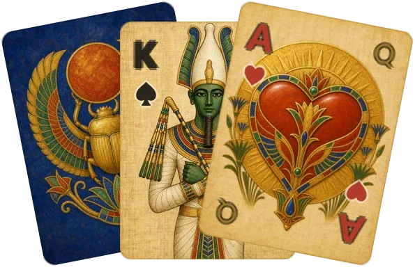
Scarab
Ancient Egypt on papyrus. Alone among the decks it wears a small gold cartouche beside each index — the rank this card pairs with to make thirteen, which is Pyramid's whole problem solved in the corner of your eye.
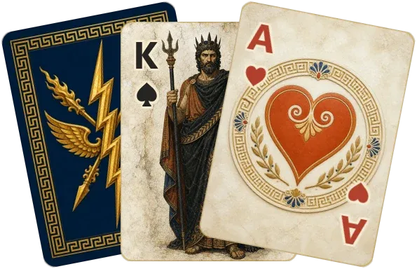
Olympus
Gods painted on marble, with a gold index laid over the plate. A plain decorative deck: the corners hold the rank and the suit, nothing more.
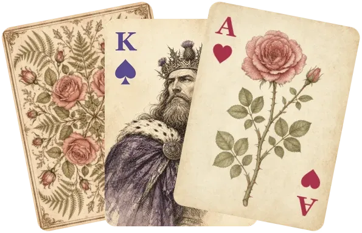
Herbarium
A pressed-botanical plate book in ink and watercolour, with the four suits as four plant families — rose, marigold, clover, thistle — on a deep botanical-green table.
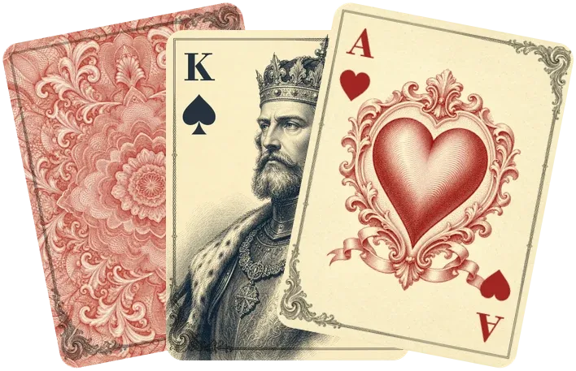
Filigree
Engraved vermilion and iron-gall ink, in the classic two-colour convention, laid on an antique espresso-leather writing desk.
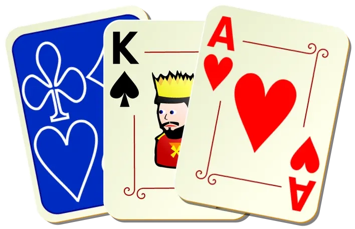
Ornamental
The first illustrated deck Cardz shipped — vector ornament rasterized so that every hairline survives at card size, on a Victorian damask table.
Card art by Nicu Buculei, from his OpenClipart ornamental deck. Released into the public domain (CC0 1.0).
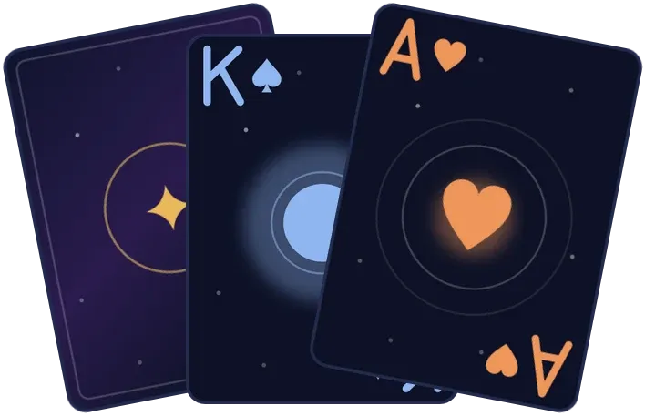
Deepfield
A space deck: dark navy cards, orbital pips, celestial courts, and four colours of suit instead of the usual two.
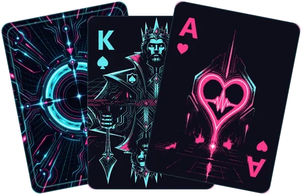
Neon
A midnight arcade. Near-black cards printed in four inks and lit cyan and magenta, with glowing two-headed courts and a lattice on the back — cyan and a ring for one deck, magenta and a diamond for the other. The floor is darker than the card stock, so every card reads as a lit object, and the sign hanging over the table hums and stutters while you play.
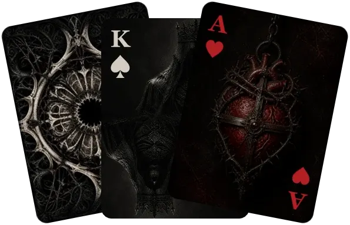
Dread
Restrained gothic horror in soot black, dried-blood crimson and cold bone ash. The courts and jokers are true mirrored portraits, the aces are cursed reliquaries, and the number cards keep clean glyph pips over distressed stock. Its table is blackened altar stone lit by a candle rather than a gradient — the pool of light gutters and wanders under the cards.
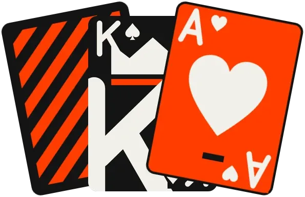
Monosolid
Paper-cut shapes in two inks against a dark ink table. Type as image, tally pips, and courts cut down to a crown, an orb, and a blade.
Cardz also ships a Colourblind deck — blue hearts and diamonds against black spades and clubs — so that telling the suits apart never depends on telling red from green.